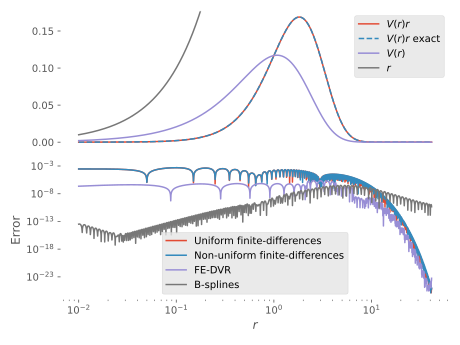

Diagonal operators
Diagonal operators are operators that only depend on the coordinate; they are also called local operators. They act on a function to produce a new function as
Typical examples are potentials, such as the Coulomb potential $V(x) = Q/x$, generated by a charge $Q$. This potential is not polynomial, i.e. we cannot compute its matrix elements exactly using Gauß quadratures, but with high enough order and intelligent placement of the nodes, we can get sufficient accuracy.
In orthogonal bases, such as finite-differences and FE-DVR diagonal operators are represented by diagonal matrices, whose elements coincide with the values of the function evaluated at the nodes, whereas in B-splines they are banded (with the bandwidth decided by the polynomial order).
We can construct diagonal operators in two ways:
- From a scalar-valued function
- From a vector of expansion coefficients
Construction from scalar-valued function
The first way consists of constructing a QuasiDiagonal object representing the function broadcast along the continuous dimension of our quasimatrix:
julia> f = x -> sin(2π*x);
julia> rmax,k,N = 10.0,7,71;
julia> r = Inclusion(0..rmax)
Inclusion(0.0..10.0)
julia> qf = QuasiDiagonal(f.(r))
QuasiDiagonal{Float64,QuasiArrays.BroadcastQuasiArray{Float64,1,var"#3824#3825",Tuple{Inclusion{Float64,IntervalSets.Interval{:closed,:closed,Float64}}}}}(QuasiArrays.BroadcastQuasiArray{Float64,1,var"#3824#3825",Tuple{Inclusion{Float64,IntervalSets.Interval{:closed,:closed,Float64}}}}(var"#3824#3825"(), (Inclusion(0.0..10.0),)))We can then project this onto a specific basis:
julia> R = FiniteDifferences(1:N, rmax/(N+1))
Finite differences basis {Float64} on 0.0..10.0 with 71 points spaced by Δx = 0.1388888888888889
julia> F = R'*qf*R
71×71 Diagonal{Float64,Array{Float64,1}}:
0.766044 ⋅ ⋅ ⋅ ⋅ ⋅ ⋅ … ⋅ ⋅ ⋅ ⋅ ⋅ ⋅ ⋅
⋅ 0.984808 ⋅ ⋅ ⋅ ⋅ ⋅ ⋅ ⋅ ⋅ ⋅ ⋅ ⋅ ⋅
⋅ ⋅ 0.5 ⋅ ⋅ ⋅ ⋅ ⋅ ⋅ ⋅ ⋅ ⋅ ⋅ ⋅
⋅ ⋅ ⋅ -0.34202 ⋅ ⋅ ⋅ ⋅ ⋅ ⋅ ⋅ ⋅ ⋅ ⋅
⋅ ⋅ ⋅ ⋅ -0.939693 ⋅ ⋅ ⋅ ⋅ ⋅ ⋅ ⋅ ⋅ ⋅
⋅ ⋅ ⋅ ⋅ ⋅ -0.866025 ⋅ … ⋅ ⋅ ⋅ ⋅ ⋅ ⋅ ⋅
⋅ ⋅ ⋅ ⋅ ⋅ ⋅ -0.173648 ⋅ ⋅ ⋅ ⋅ ⋅ ⋅ ⋅
⋅ ⋅ ⋅ ⋅ ⋅ ⋅ ⋅ ⋅ ⋅ ⋅ ⋅ ⋅ ⋅ ⋅
⋅ ⋅ ⋅ ⋅ ⋅ ⋅ ⋅ ⋅ ⋅ ⋅ ⋅ ⋅ ⋅ ⋅
⋅ ⋅ ⋅ ⋅ ⋅ ⋅ ⋅ ⋅ ⋅ ⋅ ⋅ ⋅ ⋅ ⋅
⋅ ⋅ ⋅ ⋅ ⋅ ⋅ ⋅ … ⋅ ⋅ ⋅ ⋅ ⋅ ⋅ ⋅
⋅ ⋅ ⋅ ⋅ ⋅ ⋅ ⋅ ⋅ ⋅ ⋅ ⋅ ⋅ ⋅ ⋅
⋅ ⋅ ⋅ ⋅ ⋅ ⋅ ⋅ ⋅ ⋅ ⋅ ⋅ ⋅ ⋅ ⋅
⋅ ⋅ ⋅ ⋅ ⋅ ⋅ ⋅ ⋅ ⋅ ⋅ ⋅ ⋅ ⋅ ⋅
⋅ ⋅ ⋅ ⋅ ⋅ ⋅ ⋅ ⋅ ⋅ ⋅ ⋅ ⋅ ⋅ ⋅
⋅ ⋅ ⋅ ⋅ ⋅ ⋅ ⋅ … ⋅ ⋅ ⋅ ⋅ ⋅ ⋅ ⋅
⋮ ⋮ ⋱ ⋮ ⋮
⋅ ⋅ ⋅ ⋅ ⋅ ⋅ ⋅ … ⋅ ⋅ ⋅ ⋅ ⋅ ⋅ ⋅
⋅ ⋅ ⋅ ⋅ ⋅ ⋅ ⋅ ⋅ ⋅ ⋅ ⋅ ⋅ ⋅ ⋅
⋅ ⋅ ⋅ ⋅ ⋅ ⋅ ⋅ ⋅ ⋅ ⋅ ⋅ ⋅ ⋅ ⋅
⋅ ⋅ ⋅ ⋅ ⋅ ⋅ ⋅ ⋅ ⋅ ⋅ ⋅ ⋅ ⋅ ⋅
⋅ ⋅ ⋅ ⋅ ⋅ ⋅ ⋅ ⋅ ⋅ ⋅ ⋅ ⋅ ⋅ ⋅
⋅ ⋅ ⋅ ⋅ ⋅ ⋅ ⋅ … ⋅ ⋅ ⋅ ⋅ ⋅ ⋅ ⋅
⋅ ⋅ ⋅ ⋅ ⋅ ⋅ ⋅ ⋅ ⋅ ⋅ ⋅ ⋅ ⋅ ⋅
⋅ ⋅ ⋅ ⋅ ⋅ ⋅ ⋅ ⋅ ⋅ ⋅ ⋅ ⋅ ⋅ ⋅
⋅ ⋅ ⋅ ⋅ ⋅ ⋅ ⋅ ⋅ ⋅ ⋅ ⋅ ⋅ ⋅ ⋅
⋅ ⋅ ⋅ ⋅ ⋅ ⋅ ⋅ 0.173648 ⋅ ⋅ ⋅ ⋅ ⋅ ⋅
⋅ ⋅ ⋅ ⋅ ⋅ ⋅ ⋅ … ⋅ 0.866025 ⋅ ⋅ ⋅ ⋅ ⋅
⋅ ⋅ ⋅ ⋅ ⋅ ⋅ ⋅ ⋅ ⋅ 0.939693 ⋅ ⋅ ⋅ ⋅
⋅ ⋅ ⋅ ⋅ ⋅ ⋅ ⋅ ⋅ ⋅ ⋅ 0.34202 ⋅ ⋅ ⋅
⋅ ⋅ ⋅ ⋅ ⋅ ⋅ ⋅ ⋅ ⋅ ⋅ ⋅ -0.5 ⋅ ⋅
⋅ ⋅ ⋅ ⋅ ⋅ ⋅ ⋅ ⋅ ⋅ ⋅ ⋅ ⋅ -0.984808 ⋅
⋅ ⋅ ⋅ ⋅ ⋅ ⋅ ⋅ … ⋅ ⋅ ⋅ ⋅ ⋅ ⋅ -0.766044As indicated above, for uniform finite-differences the matrix elements coincide with the function values at the nodes:
julia> norm(diag(F) - f.(CompactBases.locs(R)))
0.0For B-splines, the situation is complicated by the fact that the basis functions are non-orthogonal:
julia> R = BSpline(LinearKnotSet(k, 0, rmax, N))
BSpline{Float64} basis with LinearKnotSet(Float64) of order k = 7 on 0.0..10.0 (71 intervals)
julia> F = R'*qf*R
77×77 BandedMatrices.BandedMatrix{Float64,Array{Float64,2},Base.OneTo{Int64}}:
0.000682615 0.000987306 0.00043971 8.7846e-5 8.60727e-6 3.99159e-7 … ⋅ ⋅ ⋅ ⋅
0.000987306 0.00413625 0.00468984 0.00232941 0.000573453 6.82737e-5 ⋅ ⋅ ⋅ ⋅
0.00043971 0.00468984 0.0114273 0.0114915 0.00562534 0.00134742 ⋅ ⋅ ⋅ ⋅
8.7846e-5 0.00232941 0.0114915 0.021737 0.0194201 0.00849555 ⋅ ⋅ ⋅ ⋅
8.60727e-6 0.000573453 0.00562534 0.0194201 0.0303017 0.0226904 ⋅ ⋅ ⋅ ⋅
3.99159e-7 6.82737e-5 0.00134742 0.00849555 0.0226904 0.0273211 … ⋅ ⋅ ⋅ ⋅
6.92763e-9 3.1258e-6 0.000131733 0.0016054 0.0074447 0.0129012 ⋅ ⋅ ⋅ ⋅
⋅ 4.90703e-10 7.84375e-7 4.68188e-5 0.000508687 0.000296132 ⋅ ⋅ ⋅ ⋅
⋅ ⋅ 8.00117e-11 1.57973e-7 1.60126e-6 -0.000368678 ⋅ ⋅ ⋅ ⋅
⋅ ⋅ ⋅ 1.8637e-12 -8.38672e-8 -2.36173e-5 ⋅ ⋅ ⋅ ⋅
⋅ ⋅ ⋅ ⋅ -2.00923e-11 -1.72818e-7 … ⋅ ⋅ ⋅ ⋅
⋅ ⋅ ⋅ ⋅ ⋅ -2.22022e-11 ⋅ ⋅ ⋅ ⋅
⋅ ⋅ ⋅ ⋅ ⋅ ⋅ ⋅ ⋅ ⋅ ⋅
⋅ ⋅ ⋅ ⋅ ⋅ ⋅ ⋅ ⋅ ⋅ ⋅
⋅ ⋅ ⋅ ⋅ ⋅ ⋅ ⋅ ⋅ ⋅ ⋅
⋅ ⋅ ⋅ ⋅ ⋅ ⋅ … ⋅ ⋅ ⋅ ⋅
⋮ ⋮ ⋱ ⋮
⋅ ⋅ ⋅ ⋅ ⋅ ⋅ ⋅ ⋅ ⋅ ⋅
⋅ ⋅ ⋅ ⋅ ⋅ ⋅ ⋅ ⋅ ⋅ ⋅
⋅ ⋅ ⋅ ⋅ ⋅ ⋅ ⋅ ⋅ ⋅ ⋅
⋅ ⋅ ⋅ ⋅ ⋅ ⋅ ⋅ ⋅ ⋅ ⋅
⋅ ⋅ ⋅ ⋅ ⋅ ⋅ … ⋅ ⋅ ⋅ ⋅
⋅ ⋅ ⋅ ⋅ ⋅ ⋅ ⋅ ⋅ ⋅ ⋅
⋅ ⋅ ⋅ ⋅ ⋅ ⋅ -1.8637e-12 ⋅ ⋅ ⋅
⋅ ⋅ ⋅ ⋅ ⋅ ⋅ -1.57973e-7 -8.00117e-11 ⋅ ⋅
⋅ ⋅ ⋅ ⋅ ⋅ ⋅ -4.68188e-5 -7.84375e-7 -4.90703e-10 ⋅
⋅ ⋅ ⋅ ⋅ ⋅ ⋅ … -0.0016054 -0.000131733 -3.1258e-6 -6.92763e-9
⋅ ⋅ ⋅ ⋅ ⋅ ⋅ -0.00849555 -0.00134742 -6.82737e-5 -3.99159e-7
⋅ ⋅ ⋅ ⋅ ⋅ ⋅ -0.0194201 -0.00562534 -0.000573453 -8.60727e-6
⋅ ⋅ ⋅ ⋅ ⋅ ⋅ -0.021737 -0.0114915 -0.00232941 -8.7846e-5
⋅ ⋅ ⋅ ⋅ ⋅ ⋅ -0.0114915 -0.0114273 -0.00468984 -0.00043971
⋅ ⋅ ⋅ ⋅ ⋅ ⋅ … -0.00232941 -0.00468984 -0.00413625 -0.000987306
⋅ ⋅ ⋅ ⋅ ⋅ ⋅ -8.7846e-5 -0.00043971 -0.000987306 -0.000682615Construction from existing expansion coefficients
Now, assume that we already know $f(x)$ expanded over the basis function $B_i(x)$ of our basis:
where
We wish to find the matrix elements of the matrix representing the linear operator that acting on $1$ gives $f(x)$:
i.e. we are in some sense trying to solve
for $\mat{L}$, where $\vec{o}$ is the expansion coefficients of $1$ in our basis.
However, we may also consider an alternative approach, that is basically the same as the one described in the section on Densities; what we are trying to achieve is a linear operator that when acting on a function produces the product of two functions expanded on the same basis. We may therefore employ the same routine as we use to find the mutual densities, but without conjugating the first function (the one corresponding to the diagonal operator).
Example
As an example, we consider the calculation of
where $f(r)=r$ and
which is a kind of potential that arises in Coulomb repulsion between two electrons.
Now assume we know the expansion coefficients of $V(x)$ as a function in a certain basis, and we wish to turn it into an operator that we can act on vectors of expansion coefficients of other functions. We can find this operator using the helper object DiagonalOperator, which takes a vector of expansion coefficients and computes function products using FunctionProduct as outlined above. Additionally, it supports updating the operator from a new set of expansion coefficients via copyto!(::DiagonalOperator, ::AbstractVector); this is useful if the vector of coefficients are updated in an iterative procedure. Using this helper object, it is very easy to construct the linear operator corresponding to $V(r)$:
julia> Z = 1.0
1.0
julia> rmax = 20*(2^1.05)/Z
41.4105969536551
julia> R = BSpline(ExpKnotSet(5, -2.0, log10(rmax), 100))[:,2:end-1]
BSpline{Float64} basis with ExpKnotSet(Float64) of order k = 5 (quartic) on 0,0.01..41.4105969536551 (100 intervals), restricted to basis functions 2..103 ⊂ 1..104
julia> r = axes(R,1)
Inclusion(0.0..41.4105969536551)
julia> V = r -> (0.314269680527354*r^2 + 0.20951312035157*r)*exp(-3*r/2);
julia> Vc = R \ V.(r);
julia> rc = R \ identity.(r);
julia> L = DiagonalOperator(applied(*, R, Vc));
julia> Vr = L*rc
102-element Array{Float64,1}:
-7.391060759593551e-13
3.798365781660508e-6
1.2424470188558774e-5
2.7121761396970832e-5
3.2090729949950215e-5
3.7969882632299105e-5
4.492587089426764e-5
5.3155830522769964e-5
6.289294838594926e-5
7.441303882522786e-5
8.804231534560188e-5
0.00010416656971082224
0.00012324201184025276
0.0001458080652934851
0.00017250246558867294
0.00020407906660027916
0.00024142882900537449
0.0002856045425354325
0.00033784992337017024
0.0003996338290638074
0.00047269044731331535
0.0005590664411927001
0.0006611761720147723
⋮
0.0018732976205509439
0.0008808683138014906
0.00037668294021034587
0.00014695745488995618
5.063842777910832e-5
1.599013022980497e-5
4.103744132813787e-6
1.109651845760156e-6
1.2944992205824047e-7
8.022322694306368e-8
-2.5482483001496722e-8
2.014749642570805e-8
-1.2702692170923127e-8
8.30625314474844e-9
-5.430955853056595e-9
3.5902740375307133e-9
-2.4311284341540674e-9
1.7347709924495226e-9
-1.3749456882844004e-9
1.3170098300409254e-9
-8.910068563006749e-10
3.7529492654970227e-10
Reference
CompactBases.DiagonalOperator — TypeDiagonalOperatorHelper structure that when acting on a function $f(x)$ produces the product $f(x)g(x)$, where $g(x)$ is e.g. a potential. This is similar to R'*QuasiDiagonal(g.(x))*R in intent, but simplifies the case when $g(x)$ needs to be updated, without computing a lot overlap integrals. This is accomplished by computing the FunctionProduct of the two functions directly.
CompactBases.DiagonalOperator — MethodDiagonalOperator(f)Construct DiagonalOperator from a function expansion f.
Base.copyto! — Methodcopyto!(o::DiagonalOperator, diag::AbstractVector)Update the DiagonalOperator to represent multiplication by the function whose expansion coefficients are diag.
LinearAlgebra.mul! — Functionmul!(y, L::DiagonalOperator, x[, α=1, β=0])Compute the action of the DiagonalOperator L on x and store the result in y.